bone*** · 미 시리즈 소리잔 2P · 2026.11.03
★★★★★ [ 5/5 ]
“잔 가장자리가 살짝 튀어나온 디자인이 물 마실 때 은은하게 울려서 재미있어요.”
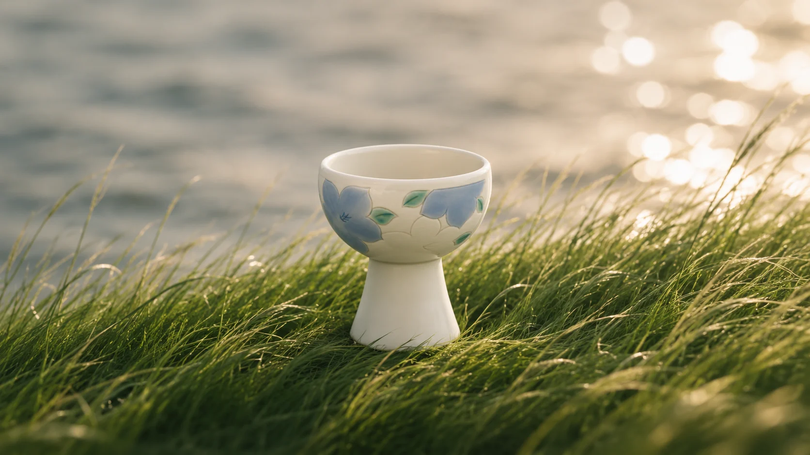
오래 쓰는 아름다움
이어온 한국의 미감을, 오늘의 삶에 맞게 담아곁에 오래 두는 한 잔.
완성된 모습에서형태 이전의 흙까지.한 잔의 시작을거슬러 올라갑니다.
잔을 눌러 깨뜨려 보세요
잔의 가장 아래로, 조금 더 가까이.
우리 도자기의 형태를오늘의 식탁 위 잔으로.익숙하고도 새로운 소리잔.
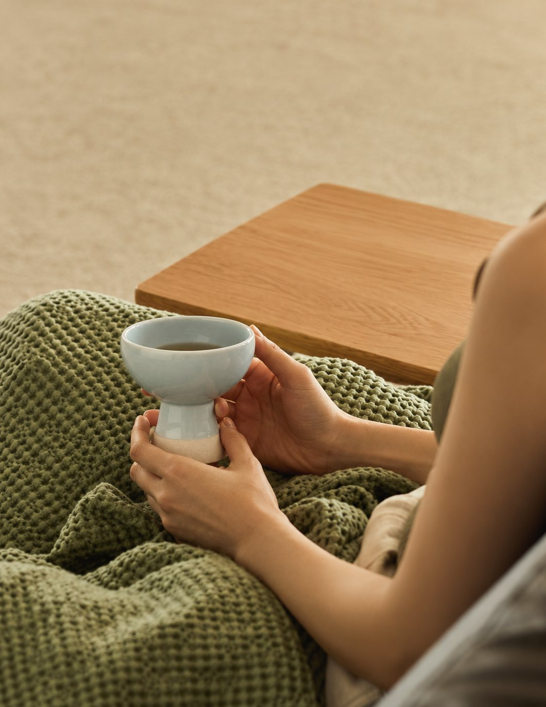
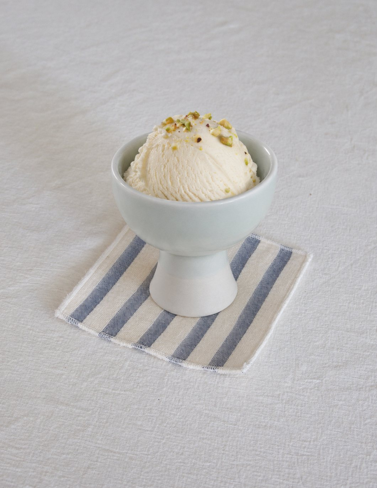
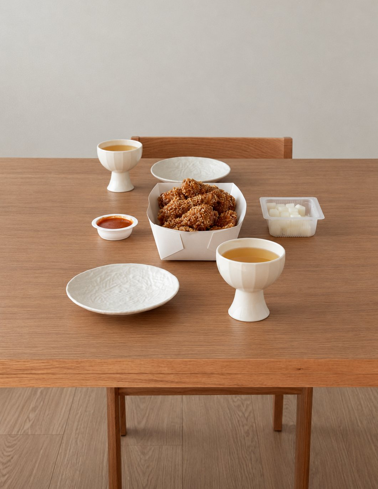
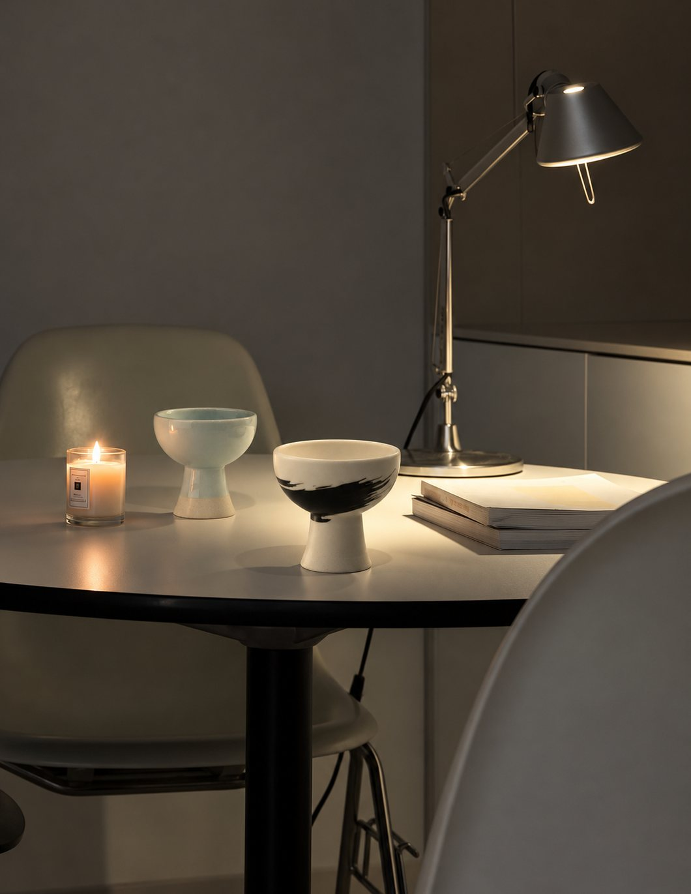
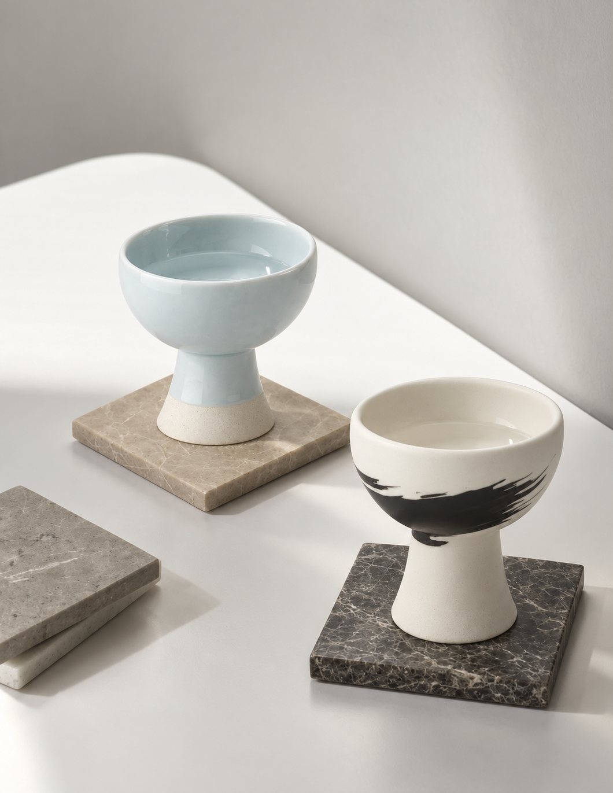
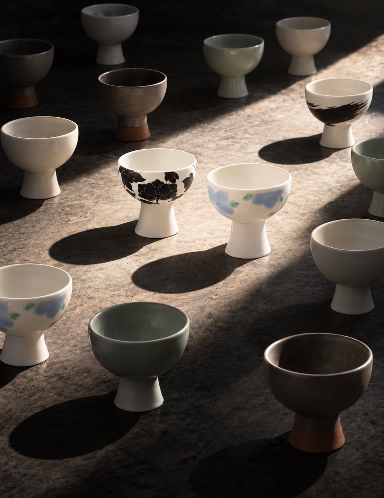
손에 닿은 순간부터 일상에 머무는 시간까지.
소리잔을 곁에 둔 장면을 만나보세요.
광주요 공식 온라인몰 소리잔 실구매 후기
소리잔, 일상 속에서“잔 가장자리가 살짝 튀어나온 디자인이 물 마실 때 은은하게 울려서 재미있어요.”

“디자인이 너무 고급집니다. 찰랑찰랑 구슬 소리가 나는게 마음을 편하게 해줍니다.”
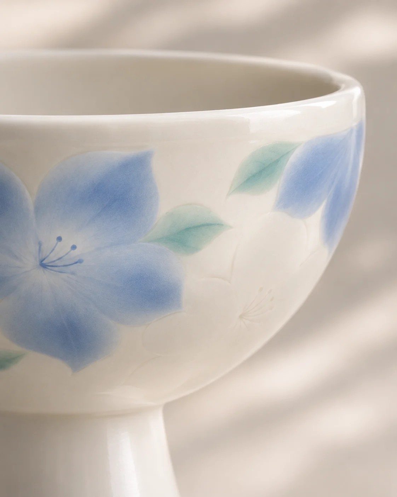
“소리가 좋아서 자주 사용하게된다네요 시간이갈수록더 맘에드는 잔이랍니다”
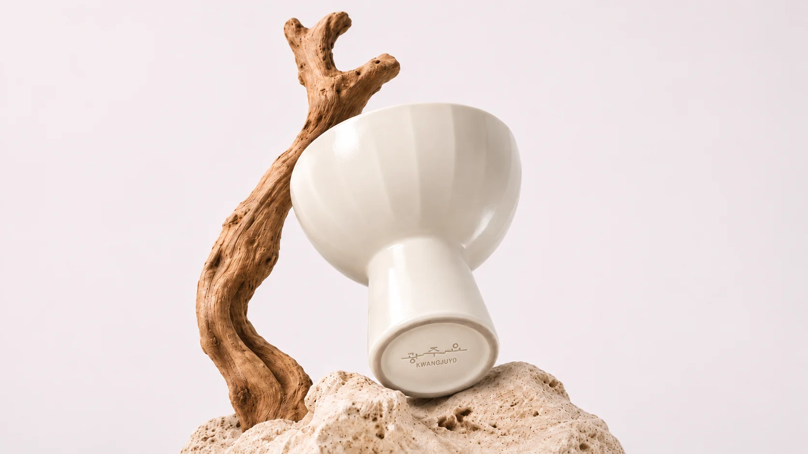
“맑은소리도 신기했구요.. 아무래도 술잔보다는 찻잔으로 사용할듯 싶습니다.”
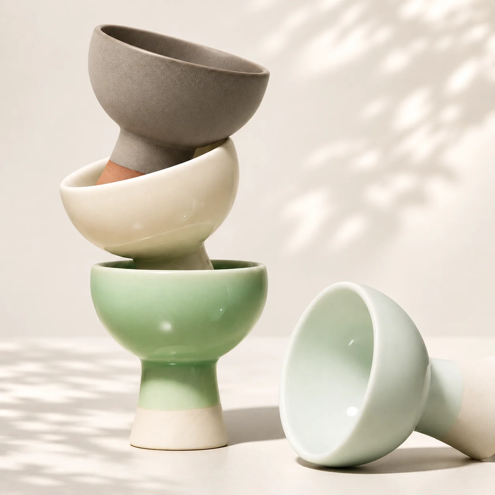
“또로롱 굴러가는 소리 들으면 풍류를 즐기는 선비가 된 느낌”
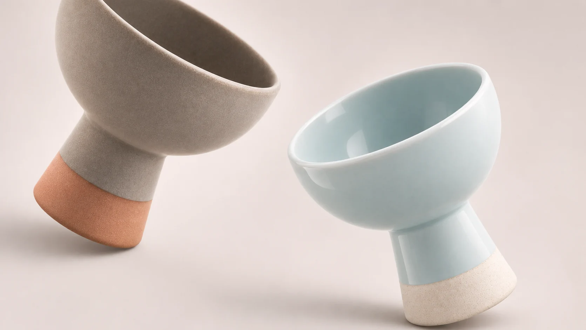
60년
한 손에 감기는 크기, 오래 들어도 편안한 무게
한 손의 무게
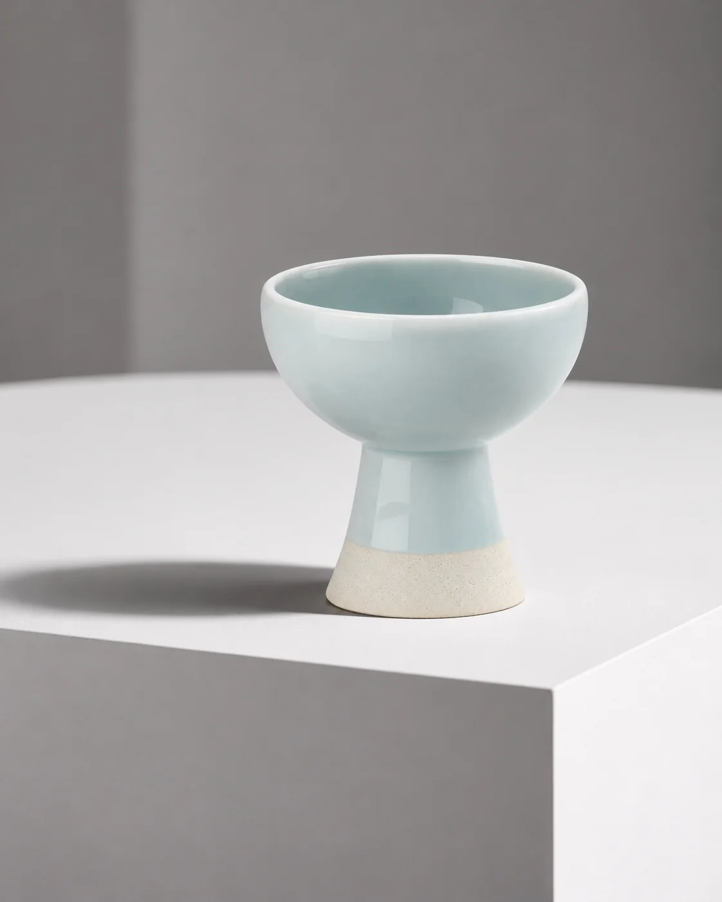
곡선까지 빚어낸 형태
성형: 손으로 빚은 곡선소성: 고온의 가마결과: 맑은 울림
불을 견딘 잔
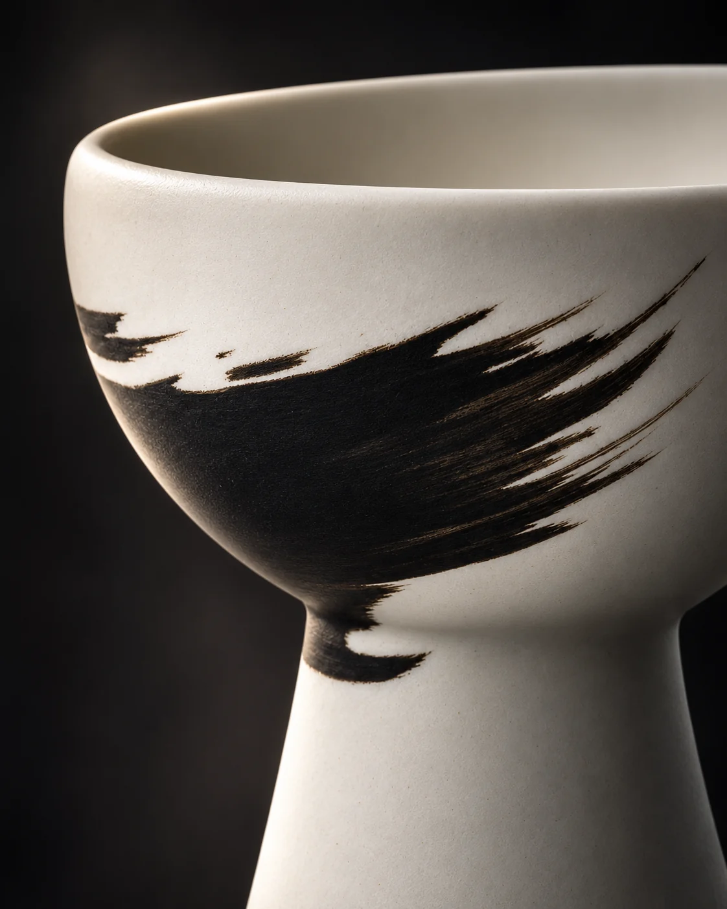
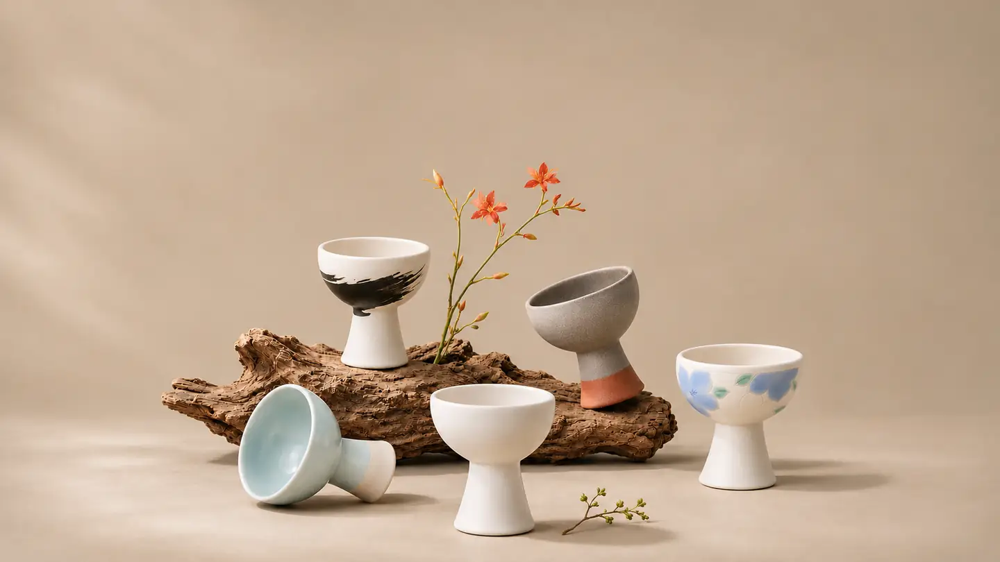
조선 백자의 쓰임을 오늘의 식탁으로 잇습니다
전통을 잇다